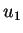
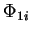
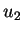
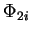
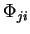

The precision of the calculation can be checked in the following way. For simplicity, we consider the first method. We start from

and in a single energy calculation (without relaxation, of course!) all forces
of the FCM is obtained. Then, we take
and repeat the calculation. It gives the complete second row,
. This way, the whole matrix is obtained. However, the FCM should be symmetric. Due to the higher anharmonic terms that were dropped in deriving the working expression for the FCM, Eq. (2.3), this condition, however, will not be satisfied. Thus, by checking the relative difference between elements
, one can check its precision.
There are basically two ways in improving precision. Firstly, one
can reduce the trial displacements  . This is tricky as the
forces on atoms are calculated numerically in any DFT code, so that
forces may become unrealiable if
. This is tricky as the
forces on atoms are calculated numerically in any DFT code, so that
forces may become unrealiable if  are too small. Note that
it is vital to have reliable forces in the DFT code you use. Normally,
it is necessary to use as high precision in the code as possible,
especially, if small displacements
are too small. Note that
it is vital to have reliable forces in the DFT code you use. Normally,
it is necessary to use as high precision in the code as possible,
especially, if small displacements  are to be used. The other
option is to use more displacements, at least two (works up to the
4th order in the energy expression). Still, make sure that the forces
are at least two orders of magnitude more accurate than in ordinary
ground state relaxation calculations.
are to be used. The other
option is to use more displacements, at least two (works up to the
4th order in the energy expression). Still, make sure that the forces
are at least two orders of magnitude more accurate than in ordinary
ground state relaxation calculations.